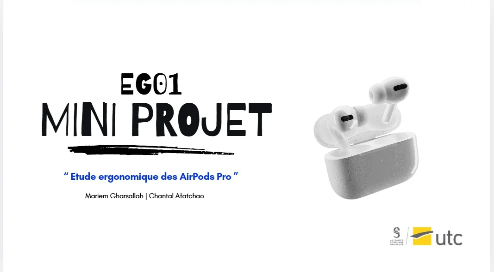

Étude de cas · Ergonomie · EG01, UTC Compiègne
AirPods Pro
Un produit jugé simple et intuitif, jusqu'à ce qu'on observe ceux qui ne le connaissent pas.

Le défi
Les AirPods Pro sont-ils utilisables par tous, ou seulement par ceux qui connaissent déjà le produit ?
Transports, sport, travail, loisirs : les écouteurs servent partout, et leurs utilisateurs s'en disent satisfaits. Nous avons suivi la démarche d'évaluation et de reconception d'EG01, de l'analyse a priori jusqu'aux exigences ergonomiques.
Observations
Dans le transport, les écouteurs créent une bulle personnelle qui coupe le bruit, au prix d'une vigilance réduite. Dans la rue, l'utilisateur jongle entre musique et environnement. À la salle de sport, la transpiration et les mouvements fragilisent le maintien.
Le maintien dépend de la morphologie et de l'effort.
La double tâche (écouter, rester attentif) pèse sur l'usage.
Des gestes sur la tige qui se déclenchent sans le vouloir.
« J'aurais aimé qu'on m'explique dès le début les différentes pressions. »
— Répondant·e au questionnaire
Tests utilisateurs
Huit tests de cinq à dix minutes dans le centre-ville de Compiègne, avec cinq participants de 18 à 22 ans et trois de 44 à 50 ans, pour vérifier si la prise en main dépend de la familiarité avec les objets connectés.
- Tâche 1
- Choisir et ajuster l'embout.
- Tâche 2
- Connecter les AirPods au téléphone.
- Tâche 3
- Décrocher un appel surprise pendant l'écoute de musique.
- Mesures
- Réussites, erreurs, hésitations, demandes d'aide, signes de frustration, verbalisation à voix haute.
L'âge n'explique pas tout : plusieurs jeunes ont échoué. Ce qui compte, c'est la familiarité préalable avec le produit.
Tâche prescrite, activité réelle
- Embout
- Prévu : comparer les quatre tailles. Réel : on garde celui en place, sans savoir qu'on peut le changer.
- Connexion
- Prévu : ouvrir le boîtier près d'un iPhone. Réel : hors écosystème Apple, rien n'apparaît.
- Appel
- Prévu : une pression courte sur la tige. Réel : on sort le téléphone, ou on raccroche sans le vouloir.
Pistes de reconception
Une forte utilité, mais une affordance partielle sur les interactions invisibles. Chaque écart observé devient une exigence, puis une solution.
Un parcours guidé au premier appairage : essai, comparaison et vérification du maintien.
Un assistant de connexion avec étapes visibles, quel que soit le téléphone, en moins de deux minutes.
Des retours distincts pour décrocher et raccrocher (haptique bref, courte annonce vocale) et un repère tactile sur la tige.
Limites
Une étude exploratoire : échantillon réduit, pas de test en mouvement (marche, sport), un téléphone incompatible qui a empêché un participant de faire deux tâches, et un contexte de test qui a pu pousser à garder l'embout par défaut.